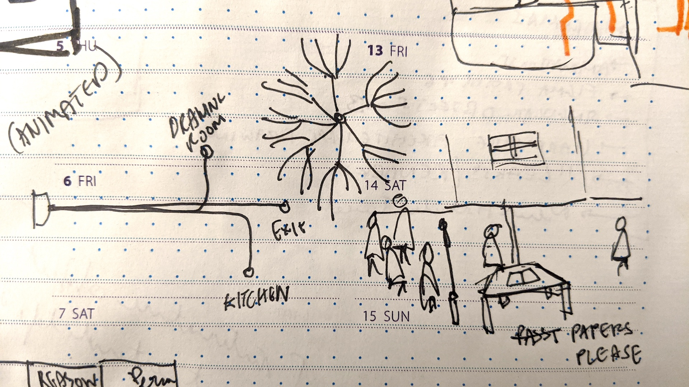
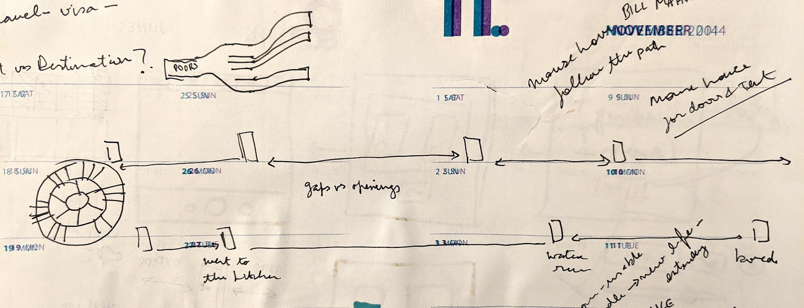
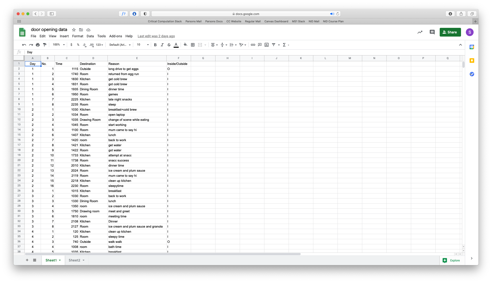

Lockdown Doors
Watch a week in my pandemic life told through the opening and closing of the door to my room. Hover over the doors to read more!
Hover over the doors to see what happens! If it doesn't load, click here ↗.
Data visualisation has always seemed quite straightforward to me. Telling stories with the help of data is easy enough. There's plenty of ways to do so, for example using bar graphs, pie charts, alluvial diagrams, waffle grids, amongst others. However I've never given much thought to embedding stories and narratives within the data visualisation. Telling a personal story through a period of time with data is not something I'm familiar with.

Ideation sketches
I wanted to track a data point which is unique to my context and surroundings. I initially thought of tracking my digital behaviours, but it wasn't an accurate reflection of me, in this moment. I narrowed in on either tracking the number of times I would bite my nails, or the number of times the door to my room would open. However I quickly realised that the moment I would become aware of biting my nails, I would stop doing it. Although it's a great way to perhaps stop biting my nails, I'd probably end up with no data, or inaccurate data. And so I started tracking the number of times I would open the door to my room.

Sketching out the layout

Collecting data
Before I started tracking the data, I wanted to figure out what my visualisation would look like. This would help define the parameters I would need to collect.
Although I initially got bogged down in trying to use traditional data visualisation techniques, I realised that they didn't convey the essence of the data. I wanted to convey the long gaps in between me opening my door. I wanted to tell the story of my routine through the opening of the door.
Finally, I figured out a simple solution to the problem. Just as I would draw out my idea or the story I wanted to convey, the data visualisation would do the same thing.